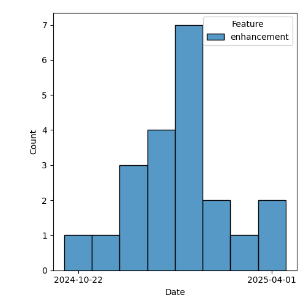

QT4 CG Meeting 120 Minutes 2025-05-06
Meeting index / QT4CG.org / Dashboard / GH Issues / GH Pull Requests
Table of Contents
Minutes
Approved at meeting 120 on 13 May 2025.
Summary of new and continuing actions [0/6]
[ ]QT4CG-082-02: DN to work with NW to come to agreement on the fn:ranks proposal[ ]QT4CG-107-05: JLO and DN to consider a proposal for system defined records.[ ]QT4CG-112-01: JLO to propose a concrete example that uses “.” in a ~%method~s.[ ]QT4CG-116-01: Add a specific error code for unsupported options on doc and doc-available[ ]QT4CG-118-01: MK to make an incorrect type raise an error in #1906[ ]QT4CG-119-02: MK to add a note about how schema composition is done for multiple options
1. Administrivia
1.1. Roll call [7/12]
Regrets: JWL, JLO
[X]David J Birnbaum (DB)[ ]Reece Dunn (RD)[X]Christian Grün (CG)[X]Joel Kalvesmaki (JK)[X]Michael Kay (MK)[ ]Juri Leino (JLO)[ ]John Lumley (JWL)[X]Dimitre Novatchev (DN)[X]Wendell Piez (WP)[ ]Ed Porter (EP)[ ]Bethan Tovey-Walsh (BTW)[X]Norm Tovey-Walsh (NW) Scribe. Chair.
1.2. Accept the agenda
Proposal: Accept the agenda.
Accepted.
1.2.1. Status so far…
These charts have been adjusted so they reflect the preceding six months of work.
Figure 1: “Burn down” chart on open issues
Figure 2: Open issues by specification

Figure 3: Open issues by type
1.3. Approve minutes of the previous meeting
Proposal: Accept the minutes of the previous meeting, as amended.
Accepted.
1.4. Next meeting
The next meeting is scheduled for 13 May 2025.
Unlikely to achieve quorem for a face-to-face meeting colocated with MarkupUK.
Norm is at risk.
1.5. Review of open action items [5/10]
(Items marked [X] are believed to have been closed via email before this agenda was posted.)
[ ]QT4CG-082-02: DN to work with NW to come to agreement on the fn:ranks proposal[ ]QT4CG-107-05: JLO and DN to consider a proposal for system defined records.[ ]QT4CG-112-01: JLO to propose a concrete example that uses “.” in a ~%method~s.[ ]QT4CG-116-01: Add a specific error code for unsupported options on doc and doc-available[ ]QT4CG-118-01: MK to make an incorrect type raise an error in #1906[X]QT4CG-119-01: NW will add a bit of prose about * and then merge the PR 1961[ ]QT4CG-119-02: MK to add a note about how schema composition is done for multiple options
1.6. Review of open pull requests and issues
This section summarizes all of the issues and pull requests that need to be resolved before we can finish. See Technical Agenda below for the focus of this meeting.
1.6.1. Blocked
1.6.2. Merge without discussion
The following PRs are editorial, small, or otherwise appeared to be uncontroversial when the agenda was prepared. The chairs propose that these can be merged without discussion. If you think discussion is necessary, please say so.
- PR #1974: 1973 Cross-reference from type analysis to definition of disjointedness
- PR #1971: 1951 Clarifications on serialization parameters
- PR #1969: 1952 Change option name xsi-schema-location
- PR #1968: 1967 r/binary-resource/unparsed-binary/
- PR #1964: 1957 xsl output allows mixed content
- PR #1963: 1958 Fix simple typo in map:build
Proposal: accept these PRs without discussion.
Accepted.
1.6.3. Substantive PRs
The following substantive PRs were open when this agenda was prepared.
- PR #1977: 1889 Tidy up handling of HTML serialization version, default to HTML5
- PR #1976: 1661 Introduce QName literals
- PR #1975: 1240 Allow operand of dynamic function call to be a sequence
- PR #1971: 1951 Clarifications on serialization parameters
- PR #1964: 1957 xsl output allows mixed content
- PR #1959: 1953 (part) XSLT Worked example using methods to implement atomic sets
- PR #1894: Additional examples to fn:chain - in a new branch
- PR #1888: 366 xsl:package-location
- PR #1883: 882 Replace fn:chain by fn:compose
2. Technical agenda
2.1. Review of pull requests
2.2. PR #1883/1894: fn:chain and fn:compose
Related PRs:
- PR #1883: 882 Replace fn:chain by fn:compose
- PR #1894: Additional examples to fn:chain - in a new branch
We need to come to some resolution on this issue. Recall that in last week’s straw poll, there were only two options that got any votes at all: fn:compose (only) got 6 votes, both got 3 votes.
I’m going to time box this discussion to 10 minutes. If, after that time, there is still a substantial majority in favor of fn:compose only, I’m going to ask the minority to accept that the consensus does not favor keeping fn:chain as well.
- JK: After looking a little bit closer, I’m not convinced we need either. I
would vote to drop both.
- … We should be wrapping things up; if there’s a new function, there should be higher bar.
- DN: Last week, we discussed several claims that I have shown to be incorrect.
- … The chain function is easier to use than apply.
- … I asked JLO to give me an example of where fn:chain doesn’t behave as expected, but he didn’t provide one.
- … You can’t use arrow notation for consumers that have more than one argument without more plumbing.
- … The fn:chain function is like checking your luggage all the way through to your destination.
- DN: Replacing one function of with another that has less functionality is not
an improvement.
- … The fn:compose function has less functionality so it’s not a suitable substitution.
- DN: There are errors in the formal definition of fn:compose, so I’d have to vote against it.
- MK: I think fn:compose is a much simpler function. It’s an improvement because
it’s simpler and easier to understand. It doesn’t try to be polymorphic
depending on the arguments.
- … I know there are some editorial nits in the specification; I’ll fix those if the PR is accepted.
- WP: I’m on the fence. I’ve heard different claims that I find hard to reconcile. JK made a case for abstaining altogether. Should we have time to think about that.
- MK: They aren’t primitives; these functions have formal equivalents. You can write them yourself. You have to be fairly expert to do that, but you can.
- WP: One thing that we lack is compelling examples of why your average user,
not your deep user, would want to use these functions.
- … Maybe we should just show the deep user how to do that.
- DN: Function fn:chain was specifically produced as a response to some very
ugly examples of long lambda expressions containing a variety of two and three
character operators that were very hard to understand.
- … I proposed fn:chain because it simplifies these cases.
- MK: Equally, the fn:compose function was motivated by a specific use case; supplying not matches to a function that expected a callback.
- DN: Both functions are complimentary.
NW asks if there are concrete actions we could take that would help us resolve this next week?
- JK: I don’t feel like the question I asked in the PR has been answered, and
for every example that I’ve seen, I think there are two or three other ways to
do it.
- … Every example should say something that other examples haven’t.
No proposals to undertake actions where forthcoming.
Straw poll:
| Option | Votes |
|---|---|
| fn:compose (only) | 3 |
| fn:chain (only) | 0 |
| both | 1 |
| neither | 2 |
- WP: Examples would be helpful.
- NW: Perhaps, but no one voluntered to do that.
We reached no conclusion this week, the chair declares enough time has been spent on this issue for this week.
2.3. PR #1976: 1661 Introduce QName literals
See PR #1976
MK introduces the proposal without screen sharing.
- MK: We have a lot of functions that accept QNames as arguments, or maps that
have them as keys or values.
- … Constructing a QName is verbose.
- … There are two proposals for resolving that:
- … CG proposed promoting strings to QNames; but it only works for strings in no namespace.
- … I’ve got a different proposal for the case where the QName is statically known.
- … My preference is QName literals and I proposed a syntax for it.
- … It only works if you know the names statically, but it considerably simplfies things in those cases.
- … I think the groups reluctance to add new syntax is healthy, but I think this is worther.
- CG: As MK said, I have some other suggestions. But I would definitely vote for
MK’s proposal. I think it’s a clear improvement and my proposals aren’t as
general enough. I like the # syntax more than the other one.
- … What I’d like is to allow curly braces to directly add the URI without a prefix. In XQuery, the namespace context is effected by context.
- MK: That’s allowed; hash followed by an EQName.
- JK: I don’t know that I fully undertand the implications without a little bit of screen sharing. Can you explain?
MK switches to screen sharing.
- MK walks through the changes to XPath…
- JK: I’ve run into enough places where I’ve been forced to use xs:QName(). I think this is a great improvement; I worry that it might be overused.
- MK: Yes, I think there’s some risk that it will get used in function names and element names and in places where it’s not appropriate.
Some discussion of possible ambiguities. None are apparent.
Proposal: accept this PR.
Accepted.
2.4. PR #1975: 1240 Allow operand of dynamic function call to be a sequence
See PR #1975
MK introduces the PR.
- MK: This is about dynamic function calls in XPath.
- … We no longer insist that the left hand side of a function call be a single item.
- … we apply sequence concatentation to the results.
- … The example is illustrative: (MK walks through the example in 4.5.3.)
- … The idea is to make method application work much more like looking up fields and the “/” in an XML document.
- DN: MK missed something important, if a method is invoked on an empty sequence
it shouldn’t raise an error. It should just return an empty sequence.
- … This is an antipattern.
- … This would be a very foolish thing to do, but an error must be raised if someone attempts to invoke a method on an empty sequence.
- MK: The antipattern is operations on nulls, but we don’t have a null. We have an empty sequence and it’s entirely reasonable to call methods on an empty sequence.
- DN: Empty sequence is the closest thing we have to null.
- MK: This is the way the language has worked since XPath 1.0; it’s like XML. A
book can have 0 or more authors; an XPath expression can return 0 or more
authors; asking for the names of the authors will succeed even if there are no
authors.
- … XPath has always worked that way; this use case is actually the outlier.
- CG: I completely agree with MK that it’s the very philosophy of XPath to be
able to handle empty sequences and just go on. It’s true of path expressions,
simple lookup, etc.
- … This is one exception where we do something differently and I think it would be completely justified to align the behavior.
CG shows an example from the PR.
let $map := { 'giovanni': { 'city': 'roma' }, 'sara': { 'city': 'napoli' } }
return (
(: A :) $map?andrea?city
(: B :) $map('andrea')('city')
)
- CG: (A) works, but (B) raises an error. That’s inconsistent.
- … Particularly for data access, I think there’s no reason to enforce a different behavior.
- JK: I think it’s a nice convenience to be able to have multiples. We can discuss errors separately.
- MK: There’s a second PR from CG on the static type checking of lookup expressions.
Proposal: Accept the PR.
DN objects.
The PR is accepted over DN’s objection.
3. Any other business
None heard.